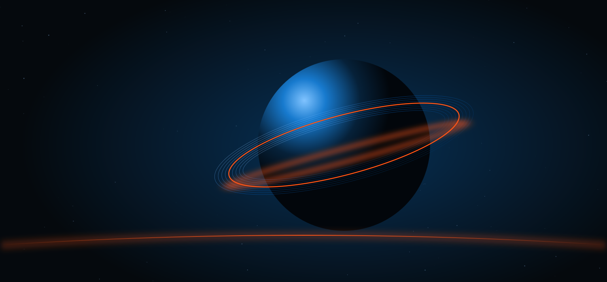

A bigger
way to think.
Borrow a brilliant mind.
See the world a little differently.

Enter the collection ↓
Essays. Lectures. Mental models.
One idea leads to another.
Different subjects.
Unexpected connections.
From the mistakes our minds make to the ideas that shape civilizations. Fifty pieces to read, watch, question, and carry with you.
The collection 50
No ideas found.
Try a different search or explore the full collection.
Stay curious.
A collection is only a beginning.
The interesting part is what you do with it.